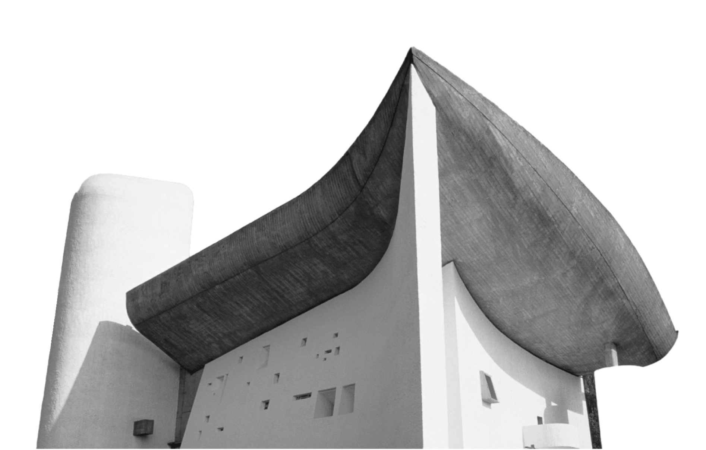

Le Corbusier
Charles-Édouard Jeanneret-Gris (1887-1965), noto con lo pseudonimo Le Corbusier, è stato uno degli architetti più influenti del XX secolo. Le Corbusier fu profondamente influenzato dai movimenti dell'urbanesimo, dell'architettura modernista e della Bauhaus. La sua visione architettonica si sviluppò in modo significativo durante la sua permanenza a Parigi.
La vita di Le Corbusier è stata caratterizzata da una profonda dedizione alla modernità e all'innovazione nell'architettura. Il suo lavoro continua a esercitare un'influenza significativa sull'architettura contemporanea.
Lavori
Le Corbusier è una figura chiave del movimento modernista nell'architettura. Ha sviluppato il concetto di "Unite d'Habitation" (Unità abitativa) e il concetto di "Ville Radieuse" (Città Radiante), entrambi esemplificativi del suo approccio alla progettazione di spazi abitativi funzionali, efficienti e orientati al benessere degli abitanti.
Le Corbusier ha formulato i "Cinque Punti dell'Architettura" che sintetizzano i principi chiave del suo approccio architettonico. Questi includono l'elevazione su pilotis (pilastri), la pianta libera, la facciata libera, la finestra a nastro e il tetto giardino.
Tra le sue opere architettoniche più celebri vi è la Capilla de Nôtre-Dame-du-Haut a Ronchamp, in Francia. Questo edificio sacro è un esempio di come Le Corbusier abbia sperimentato con forme organiche e nuove soluzioni architettoniche anche nei contesti religiosi.